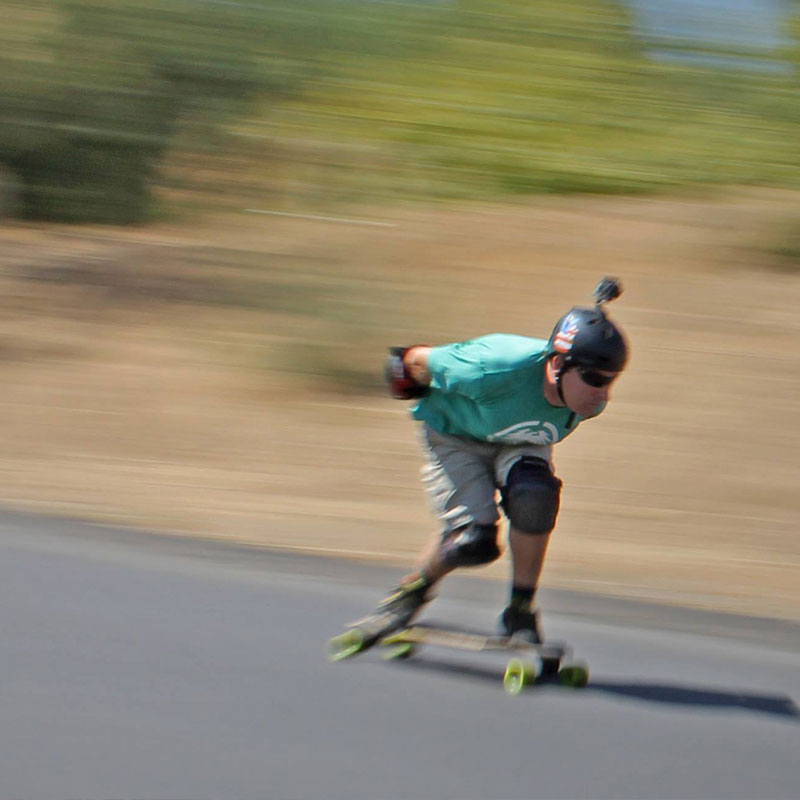

<div id="content">
  <div id="main">
    <div class="container">
      <div class="one_third">
						
      </div>

      <div class="two_third last">
        <h1>Tye Donnelly</h1>
        <p><strong style="font-family: Helvetica;">MEET&nbsp;TYE...&nbsp;</strong><span>Surfing,&nbsp;Skating,&nbsp;Snowboarding,&nbsp;Downhilling,&nbsp;Musician,&nbsp;Artist,&nbsp;furniture&nbsp;maker,&nbsp;So&nbsp;Cal&nbsp;Pioneer.&nbsp;20yrs+.Sk8ncre8/Youtube - about 300 videos.&nbsp;Films I've been in-Drop, Short bus, Dang Bud.&nbsp;I am a very hardworking family guy, with 2 girls, and my wife. I am a general contractor, and always strive to be the best. My fine furniture work is in     several of the finest homes in So Cal, many of which, I built. Inner Vision Designs.</span>
        </p>
        <p><strong style="font-family: Helvetica;">TYE'S FAVORITE NS BOARD IS...&nbsp;</strong><span>When I head out on the highway, I always have my Reaper. It gives me confidence when I should be crapping my pants. I go so fast, and it feels so good.     That is just what we want, our gear to work perfectly, Right?&nbsp;I ride NEVER SUMMER, not because they pay me, or because they are the coolest people, I can ride any gear, and I have. It's because their boards are superior     in weight, design, materials, and construction. I push these boards to their limits in all terrain, and they work perfect every&nbsp;time. My racing,     and especially cornering, has improved since I started riding their lighter and stiffer boards. The shapes, and graphics...&nbsp;2nd to none, my friends.     I couldn't be more proud to represent them.Words- Years of preparation meet the moment of opportunity, LETS DO THIS!</span>
        </p>
      </div>


    </div>
  </div>
</div>